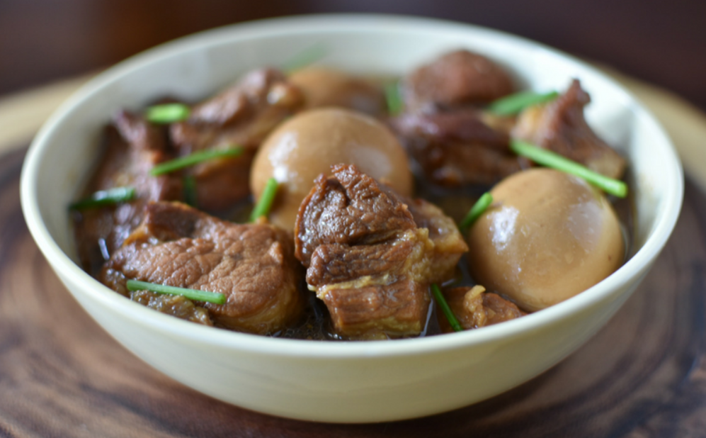
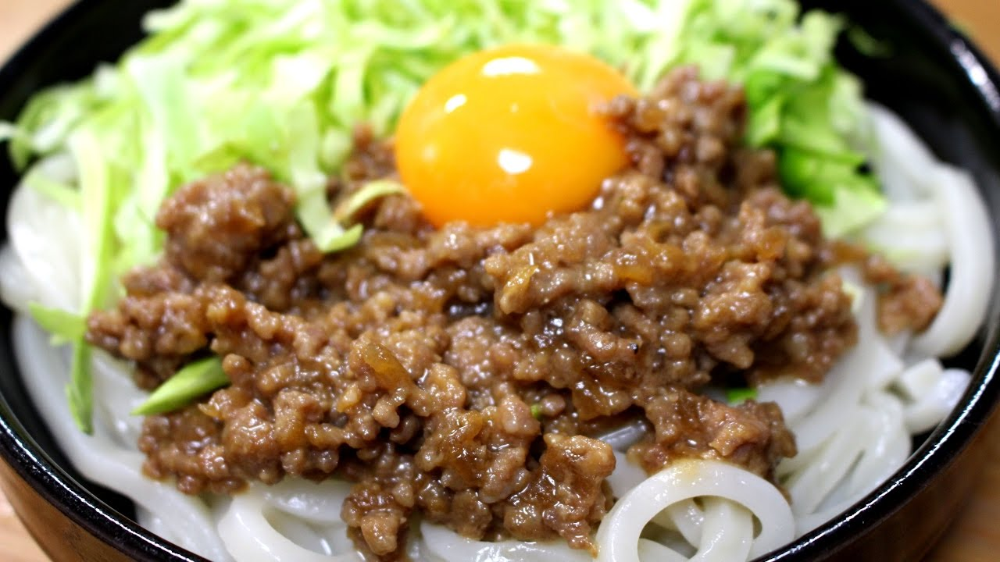

Lao Food
Tom Khem
Ingredients: (4-5 Servings)
- 2 tbsp vegetable oil
- 1/2 cup sugar
- 3 garlic cloves (crushed)
- 2 tbsp ginger minced
- 3 slices of ginger
- 1 lb pork sirloin
- 2 cups water
- 2 tbsp seasoning sauce
- 3 tbsp fish sauce
- 1 tbsp sweet soy sauce
- 6 hard boiled eggs
Instructions: Heat the oil then add sugar and caramelize until golden. Add minced garlic and ginger and cook for 1-2min. Dice up pork belly in quarter inch slices and add to the pot. Add water and sauces then mix. Cover and let simmer on low for 30 min.
Click here for more details
Japanese Food
肉味噌
材料:（4-5人分）
- 豚ひき肉 ４００ｇ（１ｌｂ）
- 玉ねぎ 2分の1
ソース：
- 味噌 100g（1cup)
- みりん 100g（1cup）
- 砂糖 50g (1/2cup）
- おろし生姜 大さじ２
- バター 大さじ１
作り方： フライパンで茶色まで豚ひき肉と玉ねぎを焼かせる。 よく混ぜる。そして、ソースを作って混ぜる。 ソースと他の材料を入れる。
ノート： 米と食べられればよかった。 サラダロールに入れればもっと美味しくなる。おにぎりも。
Click here for video